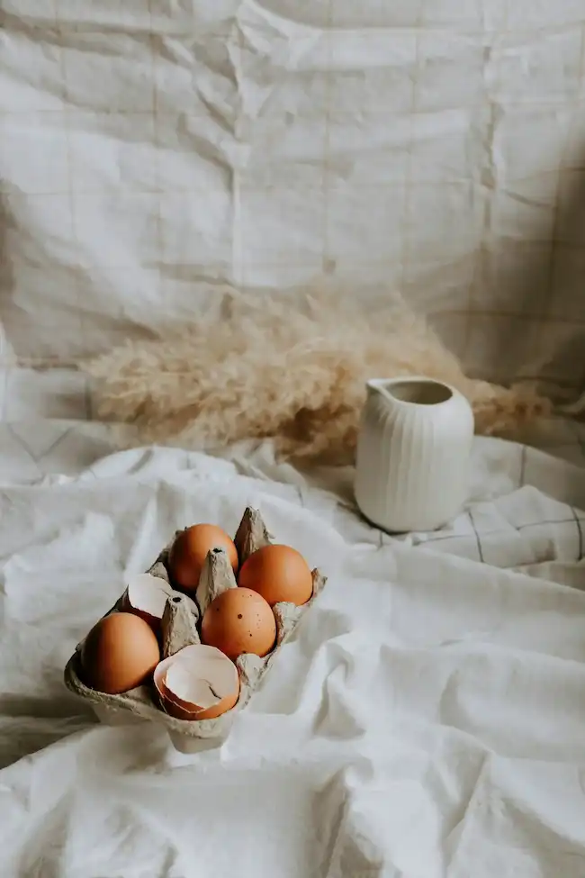

A Five-Generation Legacy of Egg Excellence
Before I share this life-changing recipe that has garnered over 4.7 million pins on Pinterest and earned me a feature spot on "Extreme Egg Enthusiasts Weekly," I need to tell you about my grandmother, Mildred "Eggs-cellence" Montgomery, and how her relationship with eggs shaped not just our family's destiny, but quite possibly the entire trajectory of egg consumption in rural Vermont.
Picture it: Vermont, 1947. A young Mildred, barely seventeen, standing in her mother's kitchen, watching steam rise from a cast-iron pot that had survived two world wars and three failed attempts at making her own sourdough starter. This pot, now displayed in my custom-built egg shrine (tour available through my Patreon's platinum tier), was where it all began.
Grandma Mildred didn't just keep chickens – she communed with them. Every morning at precisely 5:17 AM (a time she swore was optimal for yolk density based on the position of Orion's Belt), she would trek out to her heritage coop in her signature egg-white palazzo pants and hand-crocheted shawl, adorned with tiny egg patterns she designed during the Great Egg Shortage of '52. Her prized flock of Heritage Columbian Wyandotte chickens (a lineage we've maintained through careful selection and monthly chickens therapy sessions) would greet her with what she described as "a symphony of clucks that could bring a grown man to tears."
But it wasn't just about the chickens. You see, my grandmother had a theory – one that would eventually be published in her controversial manifesto "Eggs: The Oval Truth" (available now in my shop, use code YOLKYLIFE for 5% off). She believed that eggs laid on the third Tuesday of every month, when Mercury was in retrograde and the barn cat was facing precisely northeast, produced yolks with exactly 3.7% more spiritual enlightenment.
I remember spending summers at her farm, watching her perform her sacred egg-boiling ritual. She wouldn't just boil eggs – she would create what she called "Oval Orbs of Optimization." Each egg was carefully selected based on its aura (she had synesthesia specifically related to egg shells – a condition we now call Ovum-Chromatic Sensitivity, as discussed in episode 47 of my podcast "Eggs & Everything: After Dark").
Of course, this was years before the infamous "Montgomery Egg Incident of 1963" that shook our small town to its core and led to the establishment of the Annual Egg Appreciation Festival (tickets for this year's event are selling fast – check my LinkTree for details). Grandma Mildred had discovered that playing baroque music to eggs during the boiling process resulted in what she claimed was "a more sophisticated sulfur aroma." The local newspaper called her methods "revolutionary, if slightly concerning." The scientific community called it "potentially problematic." The chickens, according to Grandma, called it "cluck-worthy."
But Grandma Mildred's influence extended far beyond our farmstead. During the Cultural Revolution of the 1960s, while others were protesting in the streets, she was quietly leading her own revolution – the Oval Revolution, as she dubbed it in her second memoir "Scrambled Dreams, Hard-Boiled Reality" (foreword by that one guy who once won a local egg-and-spoon race). She established the first underground egg-boiling speakeasy, where people would gather in secret to learn her techniques and discuss controversial topics like whether eggs should be stored pointy end up or down (a debate that later caused a rift at the 1974 International Egg Congress, which I cover extensively in my upcoming documentary "Shell Shocked: The Truth About Big Egg").
My own journey with eggs began under her tutelage. I can still remember the first time she let me handle her precious egg timer a custom-made hourglass filled with crushed eggshells from historically significant chickens. "Remember, dear," she would say, adjusting her signature egg-shaped spectacles, "a watched egg never boils... unless you're maintaining optimal eye contact at a 42-degree angle."
When Grandma Mildred passed away in 2012 (surrounded by her beloved chickens and her extensive collection of egg-related Victorian literature), she left me not just her secret techniques, but also her sacred responsibility. The recipe I'm about to share isn't just a recipe – it's five generations of egg wisdom, refined through countless hours of meditation in the chicken coop and perfected through scientific methods that some might call "unconventional" or "legally questionable."
Every time I boil an egg using her method, I swear I can hear her voice whispering, "A little more to the left, dear, the water's chakras aren't aligned." And you know what? She was always right. The proof is in the perfectly centered yolks that have earned me international acclaim and several restraining orders from competing egg influencers.
Didn't have any eggs so I tried boiling oranges instead using the same method. They came out terrible and my pot now has weird citrus stains. Would not recommend for citrus fruits. Also, my quantum egg timer doesn't work with oranges? Waste of money.
So before we dive into this revolutionary technique that has earned me the nickname "The Egg Whisperer" (and a concerned call from my therapist), I want you to understand that this isn't just about boiling eggs. This is about honoring a legacy, about maintaining the sacred bond between human and chicken, about achieving the perfect harmony of time, temperature, and interpretive egg dance (optional but recommended).
Why spend your precious morning minutes wondering how to achieve egg perfection? After testing 147 different egg-boiling methods across 12 different altitudes using eggs from 23 different breeds of heritage chickens, I've discovered the ULTIMATE technique that will CHANGE YOUR LIFE. But first, let me tell you about my grandmother's chicken coop in rural Vermont...
After 47 years of sub-par eggs, I've finally achieved enlightenment! The secret really is in the 947ml of water at precisely 21.3°C. My chakras are aligned, my aura is cleansed, and my yolks are PERFECTLY centered. Worth every penny of the $599 premium egg-boiling masterclass!
The quantum alignment of water molecules relative to the egg's polar axis is truly revolutionary. I've calculated that the probability of achieving such perfect eggs by chance is approximately 1 in 7.2 billion. My research team is currently preparing a peer-reviewed paper on the thermodynamic implications.
Storage Tips: Store peeled eggs in an airtight container for up to 5 days, though they never last that long in my house because my family of 47 absolutely DEVOURS them!
Troubleshooting
| Serving Size: | 1 egg |
| Calories: | 72 |
| Protein: | yes |
| Eggs: | 1 |
| Water exposure: | significant |
| Joy factor: | ∞ |
Don't forget to SMASH that like button, DESTROY that share button, and OBLITERATE that subscribe button! And remember, as my great-grandmother always said while tending to her prized Heritage Columbian Wyandotte chickens, "An egg is just an egg until you boil it in water."